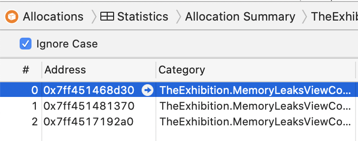

第13章：仪器仪表¶
成为一名优秀的iOS软件工程师并不仅仅是成为Swift语言的大师。它还包括了解平台为你提供了哪些工具，如何使用它们来磨练你的技能，以及如何确定你的代码中需要改进的地方。
本章的重点是使用Xcode附带的Instruments应用程序。你可能已经知道使用它的方法，但本章揭示了一些不那么明显的方法来改进你的代码。
在你阅读的过程中，你会涉及一些有趣的话题。
- 常见的内存问题以及如何解决它们。
- 如何测量性能并识别代码中的瓶颈。
- 如何测量和提高
CoreData的性能。 - 如何识别你的代码中那些需要花费太多时间来构建的行。
- 一个有趣的工具叫
Timelane，你可以把它作为一个插件安装到Instruments上。 - 你如何使用
os_signpost来发送你在Instruments上的信息。
开始工作¶
在启动器文件夹中，你会发现多个项目。在本章中你会用到它们。要开始，请打开项目TheExhibition。这一组中的每一个展览都会向你展示一个你在项目中可能遇到的不同问题。
改善你对设备资源的使用方式是构建高性能应用程序的关键。对于第一部分，你将涵盖内存。

内存优化¶
第一个展览，A-1：优化，是一个来自美国国家航空航天局的精彩图片库。
这些都是高质量的照片。其中一张的分辨率高于6,000×6,000像素!
这个展览对应用程序的内存有影响。你将使用Instruments来确定是什么导致了这个内存问题。

在Xcode中，按Command-I开始对应用程序进行分析。在Instruments中选择Allocations。然后按左上角的Record按钮。

当应用程序在模拟器上运行时，Instruments会向你显示内存中的每个分配对象。列表中最上面的项目，All Heap & Anonymous VM，显示你的应用程序的所有内存使用情况。
当Instruments正在记录时，点击模拟器中的第一个项目。应用程序将冻结几秒钟，Instruments将显示一个巨大的内存使用高峰。
造成这一巨大增长的一个新的分配项是VM: ImageIO_AppleJPEG_Data。它有21个分配项，将近800MB。

可能看起来很奇怪，你的图像会占用这么多空间，而整体文件大小却小得多。你会在下一节中发现为什么会这样。
计算图片的内存使用量¶
图像在内存中占用的空间并不等同于它们的文件大小。相反，图像分配的内存适合其分辨率大小。一个例子。
第一张图片的分辨率为5011×3341像素。每个像素的大小是4个字节，这意味着当这个图像被加载到内存中时，它几乎占据了64MB。具有如此大分辨率的图像是有代价的。
但画廊里只有12张图片。为什么Instruments列出了21的分配？为了回答这个问题，打开MemoryOptimizationViewController.swift。把totalImages的值减少到11。剖析并再次记录该应用程序。
打开第一个屏幕，注意到VM上新的分配数量：ImageIO_AppleJPEG_Data。
是11，应该是这样。那张图片是如何在10的分配中产生差异的呢？答案就在图像本身。
最后一张图片的分辨率为6228×6198像素。这需要超过147 MB的内存来加载！但操作系统并没有加载这张图。但是操作系统并没有在一个对象下加载这么大的内存。它把它分解成10个对象，这就是为什么总共有21个对象。
接下来，你将看到如何改变你的应用程序，使其更周到地使用内存。
解决方案¶
现在你已经确定问题是由照片的高分辨率引起的，你要把它们的尺寸缩小到对画廊屏幕更友好的程度。
用Preview应用程序打开每张图片。从Tools ▸ Adjust Size中调整其大小。将单位改为像素，宽度改为1024。让挂锁关闭以保持图像的长宽比。
了解将运行你的应用程序的设备的分辨率是有帮助的。iPhone 11 Pro Max的分辨率是2688×1242像素。12.9英寸的iPad的分辨率为2732×2048像素。了解这些数字可以帮助你微调图像，使它们看起来不错，但不会占用不必要的空间。
一旦你完成了更新尺寸，在Instrument上配置和记录你的应用程序，并打开第一个屏幕。
你会注意到，在画廊加载时几乎没有任何冻结，而且内存使用的增加也小得多。

恭喜你，你减少了画廊屏幕的内存使用，而不需要改变任何代码。你可以看到，关注你在项目中使用的资产是值得的。更高质量的图片意味着一个更好看的应用程序，但它们可能会使用太多的内存。在这种情况下，这种额外的改进不再增加价值--相反，它对你的应用程序产生了负面影响。
在下一部分，你将继续改善你的应用程序的内存使用。但现在是时候确保当你完成对一个对象的所有引用时，将其从内存中清理出来。这听起来很基本，但在工具周围有很多细节可以帮助你改善对象处理。
内存泄漏¶
处理泄漏就像内存管理的ABC。"注意保留周期"，"不要用强引用在闭包中捕获自己"，等等。那么关于这个问题有什么新的说法呢？
这是同样的故事。但是，它可能并不总是像你想象的那样清晰!
在展品A-2：泄漏中，你会看到一个Instrument根本没有捕获的内存泄漏。
该展品显示了一个非常基本的屏幕。它有一个单一的按钮，上面有一个笑话。每点击一次按钮，就会从https://icanhazdadjoke.com/，获取一个随机的、令人敬畏的笑话。

在你当前的乐器窗口中，从库中添加泄密项目。如果+按钮是灰色的，你就需要先停止录音。

简介并开始录制应用程序，然后打开第二个屏幕。等待几秒钟，然后点击Back关闭屏幕，然后再次打开。等待几秒钟，再重复几次。
注意，仪器没有标记任何东西。

这里是有趣的地方。选择Allocations部分，搜索MemoryLeaksViewController。

这些是MemoryLeaksViewController的所有实例，在你的内存中仍然可用。总数取决于你打开屏幕的次数。
这怎么可能呢？再往下看。这次从Xcode构建并运行该应用程序。重复同样的打开和关闭第二个屏幕的过程。然后从Xcode中打开Debug Memory Graph。

过滤MemoryLeaksViewController的内存对象，在左下角的过滤输入框中。你会发现有几个来自该视图控制器的对象仍然活着。

他们就在那里! Instruments知道它们。Xcode知道它们。而泄密者却对它们一无所知？为什么不知道？
为了找到答案，看看代码。在Xcode中，打开MemoryLeaksViewController.swift。在viewDidLoad()里面，你会看到它创建了一个InformationWriter的实例。该实例将视图控制器本身作为一个参数，然后调用doSomething：
override func viewDidLoad() {
super.viewDidLoad()
infoWriter = InformationWriter(writer: self)
infoWriter?.doSomething()
}
此外，MemoryLeaksViewController符合协议WriterProtocol，它只定义了方法writeText(_:)：
protocol WriterProtocol {
func writeText(_ text: String)
}
现在，看看InformationWriter.swift。它的init将一个写作者作为参数，并创建一个闭包，在该写作者上调用writeText(_:)：
init(writer: WriterProtocol) {
writeOperation = { info in
writer.writeText(info)
}
}
你可能已经注意到问题出在哪里了。在init(:)中创建的闭包捕获了一个对写作者的强引用。所以添加[weak writer]应该可以解决这个问题。
但在你修复任何东西之前，构建并运行该应用程序，并打开和关闭泄漏屏幕几次。然后，打开Debug Memory Graph，选择一个仍然被分配的MemoryLeaksViewController实例。

内存图是保守的¶
内存图并不是Swift语言的一部分。它是一个在运行时分析内存中的应用程序的工具。但要了解发生了什么以及它是如何工作的，退一步说，考虑一下几条信息。
你对ARC很熟悉，它是自动引用计数的简称。这是苹果用来管理内存的系统，从iOS 4开始就已经存在了。这些是任何引用类型的唯一可能组合。编译器会跟踪每个对象的引用计数。当计数达到零时，编译器会从内存中释放该对象。
然而，Debug Memory Graph以不同的方式工作。它使用的方法更接近于垃圾收集器，而不是ARC。
垃圾收集器需要在一个特定时刻建立一个应用程序的内存图。然后，它确定要删除的孤儿对象或周期。这些对象不再与主应用程序相连。
一个图可以是精确的，也可以是保守的，这取决于收集器如何构建其内存图。为了构建一个precise的图，收集器必须识别所有的指针。为此，代码生成器或编译器必须以一种可访问的、明显的方式保留指针或图所需的任何信息。
一个conservative方法是不同的。它探索内存并开始构建图。但是在某些时候，它不能确定某些东西是一个值还是一个指针，这就产生了假阳性或假阴性的可能性。
Xcode的调试内存图是保守的。它是建立在Leaks工具之上的。事实上，它们实际上是同样的东西，只是表现方式不同。Debug Memory Graph分析的是你的应用程序的内存快照，无论该应用程序是用Swift、Objective-C甚至C语言构建的，但该图可以识别所发现的引用是弱还是强。
在你调试的场景中，内存泄漏是存在的，但内存图是混乱的。它不确定对视图控制器的一些引用是否是有效引用。
修复泄漏¶
现在，是时候修复这个漏洞了。在InformationWriter.swift中，将封闭的创建更新为以下内容：
writeOperation = { [weak writer] info in
writer?.writeText(info)
}
在WriterProtocol.swift中，在协议上添加AnyObject约束。
protocol WriterProtocol: AnyObject
你不能捕获值类型的弱引用，由于协议对值类型和引用类型都有效，除非清楚地知道WriterProtocol实例总是引用类型，否则[弱写入器]部分不会有效。
现在你知道了如何测量你的内存使用情况，优化它，并确保它被清理掉，没有任何东西在那里停留的时间超过它应该停留的时间，现在是时候转移到你需要注意的另一个宝贵的设备资源：CPU。
在跳到下一节之前，你应该拿起饮料，休息一下。
性能¶
B-1时间剖析器，是展览应用程序中的第三个单元，是一个随机数的集合视图，以及该数字产生的次数。它并不做任何花哨的事情。但是，你在这个屏幕上滚动得越多，你就会注意到滚动动画中的卡顿现象。
你将使用时间分析器来帮助你确定是什么导致了这种效果。

大字体的数字是随机数，右下角的小数字告诉你这个数字产生了多少次。
你滚动的次数越多，滚动就越粗糙。你的应用程序有性能问题可能不是很明显，特别是在开始时。但无论如何都值得确认一下。
使用时间分析器工具对应用程序进行剖析和记录。打开第三个屏幕，花一些时间滚动。
在查看Instruments的数据之前，先过滤它所显示的内容，这样你就不会迷失在所有的堆栈跟踪中。
在Instruments窗口的最底部，点击Call Tree，然后勾选Hide System Libraries。这将把调用堆栈过滤到与你的应用程序相关的调用，而不包括系统调用。
时间分析器应该显示类似这样的内容：
你可以看到这里出了问题。在大约40秒的滚动中，TimeProfilerViewController.collectionView(_:cellForItemAt:)占用了80%的执行时间。而TrackedNumbersGenerator.generate()几乎占了所有的CPU时间。
现在，展开TrackedNumbersGenerator.generate()。
正如你所看到的，saveTrackedNumbers()是所有这些CPU时间的原因。
测量影响¶
现在你已经确定了问题所在，那么直接从你的应用程序中测量其影响如何？你将在集合中的其他信息中显示它。
转到MachineTimer.swift，检查结构声明后的第一行：
let startTime = mach_absolute_time()
这得到了初始化MachineTimer实例时的处理器时间。
现在，看一下mark()：
func mark() -> Int {
var baseInfo = mach_timebase_info_data_t(numer: 0, denom: 0)
guard mach_timebase_info(&baseInfo) == KERN_SUCCESS else {
return -1
}
let finishTime = mach_absolute_time()
let nano = (finishTime - startTime) *
UInt64(baseInfo.numer / baseInfo.denom)
return Int(nano / 1000)
}
这个方法计算了从创建定时器到调用这个方法的时刻所花费的时间。原始值是以纳秒为单位的，所以为了让它更人性化，它以微秒为单位返回。
进入TimeProfilerViewController.swift，在collectionView(_:cellForItemAt:)的最开始添加以下一行：
let timer = MachineTimer()
并在return cell之前添加这一行：
cell.time = "\(timer.mark())μs"
建立并运行。打开第三个屏幕，看到新的数值：

这些数字在开始时看起来很小。每个只是几毫秒。看起来不多，对吗？但这几毫秒对每个单元格来说都是重复的，当你滚动时，这个耗费的时间就会一次又一次地重复。
仪器已经指出，这个区域占了你整个应用程序CPU使用率的80%以上。你肯定可以在这里改进一些东西。
打开TrackedNumbersGenerator.swift。在该类的顶部，将shouldAlwaysSave的值改为false。
建立并运行。打开第三个屏幕，看看数字如何变化：

现在，你看到的是几百个而不是几千个。也看一下文书。
collectionView(_:cellForItemAt:)现在只需要少于25%的执行时间。这是一个重大的改进。
你刚刚关闭了保存功能，但你的应用程序仍然需要将所有生成的数字保存到文件中。你将在下一步中解决这个问题。
解决这个问题¶
你的应用程序在每次生成一个新的数字时都会将新的信息保存到文件中。为了避免这种情况，当应用程序运行时，你会把数据保存在内存中，当你的应用程序离开前台时，你会把它保存到文件中。换句话说，你会
- 加载数据，如果它以前被保存过。
- 尽可能多地操纵数据。
- 当你用完它时，将它写回磁盘。
用户将享受你的快速响应的应用程序，而你在用户完成后安全地存储数据。
打开AppDelegate.swift，在类的末尾添加这个方法：
func applicationDidEnterBackground(_ application: UIApplication) {
TrackedNumbersGenerator.saveTrackedNumbers()
}
磁盘访问是一个重要的性能因素，而你刚刚解决了你的应用程序上的一个问题。干得好!
在下一节，你将使用Core Data从磁盘上读取信息。尽管Core Data为你抽象了这一操作，但一些改变可以高度改善你从磁盘中获取数据的次数。
Core Data¶
C-1：故障优化列出了世界上所有的国家和每个国家所在的大陆。当你第一次启动展览时，展览会预先加载一个数据库，所以当你第一次打开展览时，屏幕并不是空的。

数据库模式有三个表：Countries、Continents和Languages：

Countries与 Continents有多对一的关系。每个国家只有一个大陆，但每个大陆可以有许多国家。它与Languages也有多对多的关系。
用Core Data工具模板对应用程序进行剖析和记录，或者将Faults添加到你现有的模板中。打开最后一个屏幕。
在你滚动浏览内容之前，Instruments会向你显示六个Core Data故障。一旦你开始滚动，就会出现第七个，就这样了 无论你向上或向下滚动多长时间，都不会再出现更多的故障。
你可能会问，为什么他们是七个缺点？这很简单。这是因为有七个大陆，至少在这个数据库中是这样。
那么什么是fault？快速解释一下，它意味着应用程序试图从内存中读取一个对象，因为那是第一个位置，有更高的I/O速度。然而，该对象并不存在，所以它自动尝试从另一个位置--磁盘，以较慢的I/O速度读取。然后，它用该信息更新第一个位置，以防再次被请求。
处理器已经使用了故障的概念。当你启动一个应用程序时，并不是所有的应用程序都被加载到内存中去执行。相反，处理器只加载当时需要的部分，当你继续使用你的应用程序时，它将自动从磁盘中引入更多的部分。内存比磁盘快得多，但也小得多--因此，也更昂贵。
当你初始化Core Data时，它不会将所有的数据加载到内存中。它将只加载你获取的信息，在本例中是国家的列表。
虽然每个国家都有其他的关系，但这些关系一开始并没有加载到内存中。第一次读取每个大洲的信息会触发一个故障，从数据库中读取该对象并将其存储在内存中。
每个故障都需要一些时间来解决，Instruments可以向你展示每个故障所花费的时间。

这些故障并没有造成任何性能上的影响，但正如你在前面的例子中所看到的，即使是微小的影响，当它们重复得太频繁时也会成为一个问题。
打开CoreDataOptimizationViewController.swift，在最上面，就在类声明之前，你会发现常量shouldShowLanguages。把它的值设置为true。这将显示每个国家的人说的语言。
配置和记录应用程序。打开最后一个屏幕。

现在你可以看到还有很多故障在发生。当每个语言对象第一次被访问时，它被从数据库中读取。随着你的滚动，更多的故障会出现。
Core Data预取¶
Core Data提供了一种在获取请求中预取对象的关系的方法。这意味着你只需要一趟就可以从数据库中获得你所需要的一切。
打开CoreDataManager.swift，在allCountries()中，在创建request后马上添加这一行：
request.relationshipKeyPathsForPrefetching =
["languages", "continent"]
概况，记录应用程序并打开最后一个屏幕。你根本不会看到仪器上有任何故障发生。

这是因为你在获取请求中指定要预加载那些关系属性中的对象。
如果你的数据库有一个大的操作，这可以大大改善你的性能。
然而，知道你可以从内存中卸载对象也是一件好事。这不是去分配。这与加载故障相反。你在卸载对象的同时保持其引用。当它被再次访问时，将触发一个故障。
在CoreDataManager的末尾添加这个方法：
func clearMemory() {
context.refreshAllObjects()
}
然后在CoreDataOptimizationViewController.swift中，在viewDidLoad()的末尾添加以下内容：
DispatchQueue.main.asyncAfter(deadline: .now() + 1) {
CoreDataManager.shared.clearMemory()
}
概况和记录应用程序。打开最后一个屏幕，屏幕一打开就开始滚动。
请注意，故障只在获取请求的一秒钟后才开始出现。clearMemory()将所有预取的对象返回到它们的原始状态，成为故障。
到目前为止，你已经学会了为用户优化你的应用程序，使其运行得更快、更顺畅。到目前为止，你学到的99%的优化都有利于用户。那么，为你自己，也就是为开发者优化应用程序呢？接下来你将了解到这一点。
构建时间¶
在这一节中，你将学习如何为自己优化代码! 是的，这是正确的。你可以减少你等待应用程序构建的时间。
你可能会觉得，你花在等待构建上的时间几乎不值一提。这通常是真的，因为大多数时候，您在做增量构建。Xcode只构建您在上次构建应用程序后所修改的部分。但是做一个干净的构建，你会发现这需要更长的时间。
如果你在一个大团队中工作，并且你有一个带有单元测试的CI/CD管道的构建服务器，以及很多花哨的、自动化的东西，你对等待构建完成有一定的了解。
当然，你的项目增长越多，构建的时间就越长。然而，这并不是影响构建时间的唯一因素。
你的代码的某些部分，如长方程或大量的链式命令，可能需要编译器多花点功夫来编译，因为它们可能是长语句或许多需要解决或推断的东西，然后编译器才知道你在说什么，类似于你现在刚读的这个句子，感觉很长，应该分解成小句子才容易理解!
看到我做了什么吗？这个长句子可能让你花了更多时间去理解。如果我把它分成几个小句子，就会更容易读懂。
在这个示例项目中，你将涉及如何测量你的代码的构建时间。
SlowBuilder项目演示了几种不同的慢速构建方法。该项目不做任何事情，你也不需要运行它。
打开该项目并构建它。没有什么特别的事情发生。打开报告导航器（Cmd+9），点击列表中的第一个条目（那是最新的构建），然后选择所有信息，如果它还没有被选择。展开"编译Compile Swift source files (x86_64)和Compile SlowMath.swift (x86_64)下的信息。
这里没有什么帮助。现在，在你的目标的Build Settings中，搜索Other Swift Flags，为Debug添加这个标志：
-Xfrontend -debug-time-function-bodies
再次构建该项目，看看构建日志中的相同部分。
它向你显示了在该文件中构建每个方法所花费的时间。其余的文件也会有同样的新信息。也添加这个标志：
-Xfrontend -debug-time-expression-type-checking
然后，构建并查看构建日志的同一部分。

更多的信息被写在日志中。现在它显示了建立每个表达式所花费的时间，以及每个方法的时间。这是很有信息量的，但不是很方便用户。
在Xcode中，你可以指定一个阈值来显示警告，如果一个表达式或一个函数的构建时间过长。
把这两个标志和前面的两个标志加在一起：
-Xfrontend -warn-long-expression-type-checking=25
-Xfrontend -warn-long-function-bodies=25
第一个将在一个表达式超过阈值时显示警告。第二种是当一个函数或方法花了太长时间时显示警告。每种情况的阈值被设定为25毫秒。
Note
25毫秒是个小数字。然而，这就是本章所使用的。在你自己的项目中，可以随意指定你认为足以帮助你识别峰值的阈值。
清理构建文件夹，然后再次构建项目。注意到有几个新的警告存在。
链式和构建时间¶
逐一处理这些警告。打开SlowArray.swift。在printArray()中，有几个连锁的数组操作在一个步骤中。这些操作可以被分解成多个步骤：
func printArray() {
var doubleArray = Array(repeating: 1.123, count: 100)
doubleArray = doubleArray.map { $0 * Double.random(in: 0 ..< 1000) }
var intArray = Array(repeating: 1, count: 100)
intArray = intArray.map { $0 * Int.random(in: 0 ..< 1000) }
let doubleMultiply = zip(doubleArray, intArray)
.map { $0 * Double($1) }
let sum = doubleMultiply.sorted()
.map { $0 * 123 }
.reduce(0, +)
print(doubleMultiply)
print(sum)
}
打开SlowMath.swift。在calculatePoint()中，一个新的CGPoint被构造出来，但每个参数看起来都是一个冗长而混乱的方程式。而calculateEquation()的混乱程度丝毫不减！
func calculatePoint() -> CGPoint {
CGPoint(
x: (UIApplication.shared.windows.first?.frame.size.width ?? 300 / 3)
+ CGFloat.random(in: 0...1000) / CGFloat(100),
y: (UIApplication.shared.windows.first?.frame.size.height ?? 300 / 3)
+ CGFloat.random(in: 0...1000) / CGFloat(100)
)
}
func calculateEquation() -> Double {
(Bool.random() ?
(pow(pow(Double.random(in: 100...1000), 2.0), 6.0) / 5.5
+ Double.random(in: 100...1000)) * 25 / 3
+ Double.random(in: 100...1000)
:
(pow(pow(Double.random(in: 1...100), 2.0), 6.0) / 5.5
+ Double.random(in: 1...100)) * 25 / 3 + Double.random(in: 1...100))
+ Double(UIApplication.shared.windows.first?.frame.size.width ??
CGFloat(400) / 2 * 500 * CGFloat.random(in: 100...1000))
}
所有这些慢速构建方法和表达式之间的共同点似乎是将操作链在一起。
看看SuspiciousChain.swift，看看getSuspiciousStruct()：
static func getSuspiciousStruct() -> Self {
SuspiciousStruct()
.setting(\.name) { "SomeName" }
.setting(\.phone) { "0123456789" }
.setting(\.email) { "email@somewhere.com" }
.setting(\.country) { "Earth-Country" }
.setting(\.city) { "Earth-Country-City" }
.setting(\.address) { "A place on earth, beside that shop" }
.setting(\.job) { "Super-Duper iOS Developer" }
}
Xcode似乎根本没有抱怨这个方法花了多长时间来构建。如果你检查构建日志来确定，你会发现它只花了非常少的时间。对我来说，它只花了半毫秒。所以说，链式表达式导致构建时间长的理论并不是100%准确。
在这里，对构建时间影响最大的因素是不同操作的连锁，这些操作有不同的优先级和关联性。你自己可能花了一段时间来阅读它。
在getSuspiciousStruct()中，链是一个明确的方法顺序。尽管有很多方法，但你在阅读链的时候没有任何问题，这与其他方法不同。
将具有较大构建时间的表达式分解成较小的表达式是一种改进。有时你可以节省实际的秒数，而在其他情况下，节省的时间可能不明显。但这是值得偶尔测量的，尤其是当你使用构建服务器并且有一个大型团队时。
导致构建时间激增的可能原因有很多，而且这种影响的重要性在不同的Xcode版本中会有所不同。然而，识别和测量您的代码编译所需时间的方法是相同的。
现在，您已经学会了如何使用现有的仪器来测量您的应用程序上定义的仪表。在下一节中，您将看到如何使用一个新的仪器来测量新的东西--甚至测量任何您想要的东西，由您决定。
时间线¶
追踪异步代码的进度通常不是一件容易的事。为了帮助解决这个问题，Marin Todorov开发了一个奇妙的工具，叫做Timelane。你可以从以下网站下载：http://timelane.tools。
Timelane是一个插件，你安装在Instruments上，它的工作方式与你已经拥有的其他模板一样。
在本节中，你将学习如何使用Timelane来帮助你测量和跟踪异步代码。FarOutPhotos项目有一个更大的NASA图片库。你使用图片库，Nuke，异步下载图片。

该项目使用标准的Nuke库来下载画廊图片。当你点击其中一个打开细节时，库的Combine扩展会以全尺寸打开图片。全尺寸的图片分两步显示。首先，该扩展从图库中下载调整后的图片。然后，它紧接着显示全尺寸的图片。
你将使用Timelane来跟踪每张图片何时被请求，花了多长时间被检索，是否完成或取消以及它的下载进度。
将Timelane用于工作¶
构建并运行该项目，并查看Xcode中的控制台日志。它显示了很多开始的日志，还有很多进展的和完成的--但很难追踪它们。Timelane为你做了这个魔法。
要添加Timelane的Swift包，请打开菜单File ▸ Swift Packages ▸ Add Package Dependency。
添加URL "https://github.com/icanzilb/TimelaneCombine"然后点击下一步。当提示规则时，选择Version，从下拉菜单中选择Exact，并在版本号文本字段中写入2.0.0。
Note
在编写本章时，Timelane 2.0.0是最新版本。
这将下载两个软件包：TimeLaneCombine和TimeLaneCore。打开PhotoGalleryViewController.swift，将TimelaneCore与其他导入的程序一起导入：
import TimelaneCore
就在类的声明之后，定义一个新的订阅通道，标记为Gallery来记录这些事件：
var galleryLane = Timelane.Subscription(name: "Gallery")
在文件的最后，你会发现ImagePipelineObserving.pipeline(_:imageTask:didReceiveEvent:)。这是一个委托方法，负责你在控制台看到的所有日志。
在switch语句中的正确位置添加这三行：
// for .started
galleryLane.begin()
// for .cancelled
galleryLane.end(state: .cancelled)
// for .completed
galleryLane.end(state: .completed)
剖析并记录应用程序。在Instruments中使用Timelane模板。

这个工具现在向你直观地显示了每个begin()和end(:)的时间。然而，从这个图上看，并不清楚哪条线代表哪个图像。
你添加的代码也有一个小问题。你只定义了一个名为Gallery的通道，而所有的事件都被记录在这个通道上。因为你的代码是异步的，begin()的顺序不需要和end(:)的顺序一样。为此，你需要为每个请求设置一个通道。
多个通道¶
用一个车道的字典代替你在类的开头定义的车道：
var galleryLanes: [ImageTask: Timelane.Subscription] = [:]
然后将ImagePipelineObserving.pipeline(_:imageTask:didReceiveEvent:)的实现更新为以下内容：
let imageName = imageTask.request.urlRequest.url?.lastPathComponent ?? ""
switch event {
case .started:
let lane = Timelane.Subscription(name: "Request " + imageName)
lane.begin()
galleryLanes[imageTask] = lane
print("started " + imageName)
case .cancelled:
let lane = galleryLanes[imageTask]
lane?.end(state: .cancelled)
galleryLanes[imageTask] = nil
print("canceled " + imageName)
case .completed(result: _):
let lane = galleryLanes[imageTask]
lane?.end(state: .completed)
galleryLanes[imageTask] = nil
print("completed " + imageName)
case .progressUpdated(
completedUnitCount: let completed,
totalUnitCount: let total
):
let lane = galleryLanes[imageTask]
let percent = completed * 100 / total
lane?.event(value: .value("progress: \(percent)"))
print("progress for \(imageName): \(percent)")
default:
print("default")
}
从模拟器上卸载应用程序，删除任何缓存的图像。概况，记录应用程序并再次查看仪器。
另外，在订阅组下，还有一个事件组。你会发现你触发的所有进度事件都是为每个订阅分组的。在图形视图中，选择Events over time图形，然后在底部选择All Events by Subscription。

当你选择列表中的一个事件时，顶部的时间标记会移动到该事件的位置，向你显示这个事件发生的时刻。
简介并再次记录应用程序。这一次，快速向上和向下滚动。
蓝色条代表已完成的操作，绿色代表仍在进行的操作，橙色代表已取消的操作。
当你快速滚动时，Nuke会自动优化请求。当一个单元格上的图片请求没有完成，而另一个请求被触发，Nuke就会取消第一个请求，而选择后者--因此出现了取消事件。一张图片胜过千言万语，不是吗？
时间线组合¶
打开PhotoViewController.swift并导入TimelaneCombine：
import TimelaneCombine
对于Combine的使用，它更简单。进入loadImage(url:)，将resizedImagePublisher和originalImagePublisher变量的声明改为如下：
let resizedImagePublisher =
ImagePipeline.shared.imagePublisher(with: resizedImageRequest)
.lane("Resized Image")
let originalImagePublisher =
ImagePipeline.shared.imagePublisher(with: url)
.lane("Full Image")
简介和记录应用程序。选择图库中的任何一张图片，注意在订阅组中增加了两条新的通道。

开始和结束的调用是自动为Combine用户执行的，你不需要跟踪任何东西。
以视觉方式显示信息比在控制台日志中搜索信息要容易得多。你可以看到操作有多拥挤，以及它们都是什么时候结束的，一目了然。
视觉表现可以帮助你做的事情远不止这些。你可以迅速发现你的操作顺序有什么问题，或者某件事本应完成，但却出现了错误。
要了解更多关于Timelane的信息，请访问http://timelane.tools。你对它了解得越多，你就会用得越好--特别是在Combine和RxSwift方面。
标示¶
现在你看到了一个自定义的仪器，探索一下是什么让它成为可能，以及事件是如何从你的应用程序记录到仪器的。
在应用程序方面有两个关键点：OSLog和os_signpost。
第一个使用系统的日志，直接从你的应用程序写任何日志。第二个是要写下的日志条目的类型。
打开项目FarOutPhotos-Signposts。它与FarOutPhotos相同，但在你集成Timelane之前，它有一个干净的开始。
转到PhotoGalleryViewController.swift，把这个添加到导入项中：
import os.signpost
然后，在类声明之后，添加这一行：
let log = OSLog(
subsystem: "com.raywenderlich.Far-Out-Photos",
category: "PhotoGallery")
这创建了一个新的日志实例，其子系统的AppID和类别为PhotoGallery。类别可以是任何东西，但有相关的名称总是有帮助的。
追踪图片下载¶
与你之前对Timelane所做的类似，你想跟踪图像下载。每当一个图像开始时，你要标记一个开始，当这个图像下载完毕时，你要标记这个图像的结束。
在pipeline(_:imageTask:didReceiveEvent:)中，在.started情况下添加这一行：
os_signpost(.begin, log: log, name: "ImageDownload")
而这一行在.complete的情况下：
os_signpost(.end, log: log, name: "ImageDownload")
剖析项目，创建一个新的Blank仪器项目，并从库中添加os_signpost仪器。

记录这个项目，马上你就会看到条目。你不想要所有的，所以展开仪器，直到你找到名为com.raywenderlich.Far-Out-Photos的行/道。在里面，你会发现PhotoGallery。这些是你用来定义日志对象的名字。你还会看到几个ImageDownload的间隔。
每个os_signpost的终端调用都与一个在名称参数中具有相同值的开始调用配对。但是因为它们都有相同的名字，Instrument似乎只是把它们按相反的顺序配对了。最后一个开始的是第一个结束的。而且，这也不是屏幕上加载的图像的顺序。
你可以认为这很容易：为什么不直接把图像名称作为那个字符串？
但当你尝试这样做时，Xcode会抱怨。name参数必须是一个静态字符串。通过使用OSSignpostID来区分不同的开始和结束的标志物的方法。
在begin和end调用中提供这个ID和名称，意味着当begin和end都有相同的名称和相同的SignPostID时，就可以进行匹配。
在pipeline(_:imageTask:didReceiveEvent:)中，在函数的顶部添加这一行：
let signpostID = OSSignpostID(log: log, object: imageTask)
这与图像任务一起创建了一个OSSignpostID对象。这可以确保你对同一个图像任务有相同的ID。
更新两个os_signpost调用以包括新的ID：
os_signpost(.begin, log: log, name: "ImageDownload", signpostID: signpostID)
.
.
.
os_signpost(.end, log: log, name: "ImageDownload", signpostID: signpostID)
从模拟器上删除应用程序，以删除缓存的图像，然后进行剖析和记录。
它看起来不再像一个颠倒的金字塔了，所以这解决了匹配问题。但它并没有显示出哪张图片有哪条信息。
显示更多信息¶
每个路标都可以有元数据附加在它上面。现在，只要在begin signpost中包括图片的名称就足够了。将begin的调用更新为以下内容：
os_signpost(
.begin,
log: log,
name: "ImageDownload",
signpostID: signpostID,
"%{public}s",
imageName)
紧跟在路标ID后面的参数是一个格式字符串，后面是需要的参数。格式字符串遵循记录所使用的相同的格式化规则。在这里，你只想把图像名称记录为一个公共字符串。
删除应用程序，然后配置文件和记录。
现在，这些条形图的信息量更大了。下一个部分是跟踪图像是否完成或取消了。为此，你要在它们的路标上添加不同的元数据。你已经为已完成的案件设置的路标应该有"completed"作为其元数据，而已取消的案件应该有"canceled"。
更新已完成案件的结束调用，如下：
os_signpost(
.end,
log: log,
name: "ImageDownload",
signpostID: signpostID,
"completed")
并在取消的情况下增加一个新的结束通话：
os_signpost(.end,
log: log,
name: "ImageDownload",
signpostID: signpostID,
"canceled")
再次删除应用程序，然后剖析和记录。只要应用程序在模拟器上启动，就向上和向下滚动几次。
条形图上的信息可能不是很清楚，尤其是取消的项目，因为条形图会比较窄--这是件好事。看一下图表下面的表格。
你会看到开始的路标，多少次，总持续时间，最小和平均持续时间--一些非常有用的统计数据。最重要的是，他们也会向你显示你收到的与结束的路标的元数据。截图显示了这个图片的两个取消和一个完成。这就是很多有用的信息了!
将路标作为事件使用¶
标志物也可以是一个事件 - 它们不需要总是代表一个操作的开始和结束。你可以在signpost的调用中有一个.event类型，其余的信息都是一样的。然而，没有匹配发生，因为这个事件是一个独立的signpost。尽管如此，还是要发送所有的信息，以便你能看到Instrument是如何呈现的。在.progressUpdated中添加一个新的signpost调用，就在百分比计算之后：
os_signpost(.event, log: log, name: "ImageProgress", signpostID: signpostID, "%{public}s progress: percentd", imageName, percent)
删除应用程序，然后剖析和记录。
你的事件出现在图表中，但可能很难识别它们。最好是从下面的表格中看到它们，在List: Events部分。

这只是你能用os_signpost做的事情的表面。你可以提供Instruments可以理解的元数据，这样它就可以自动为你创建有用的统计数据。
你可以创建自定义的工具，让你对用户界面和信息的提供方式有更多的控制。
Instruments的开发者帮助是一个很好的地方，可以找到更多关于你可以用Instruments做什么的信息。你对这个工具和它所提供的东西了解得越多，你就会发现自己已经知道如何解决你遇到的挑战。
关键点¶
在本章中，你学到了很多关于一些可用来了解和测量你的应用程序内部发生的事情的工具。你学会了如何。
- 理解和观察你的应用程序是如何分配内存大小的。
- 在内存图和仪器中发现分配的对象。
- 测量你的代码的性能以及执行代码所需的时间。
- 了解故障是如何在
Core Data中工作的，如何避免它们，以及当你使用完故障对象后如何减少内存的使用。 - 测量你的表达式和方法的编译时间。
- 使用奇妙的测量仪器，
Timelane，它可以显示你的异步代码的进度。 - 使用
os_signpost向仪器发送自定义事件。